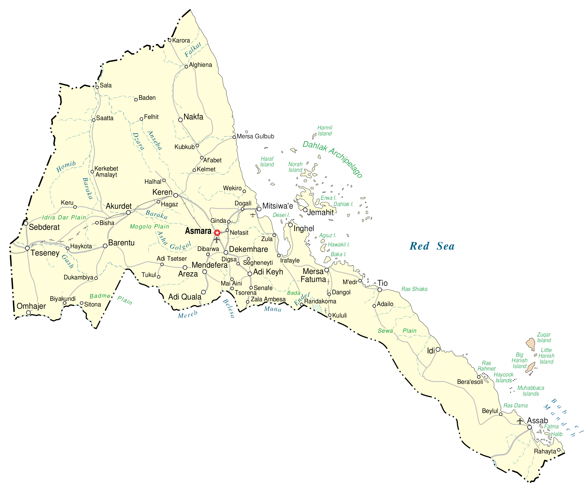

Eritrea is located in Northeast Africa and is part of the Horn of Africa. The country is along the Red Sea across from Yemen. It borders 3 other countries including Sudan to the west, Ethiopia to the south, and Djibouti to the southeast. Also, it consists of the Dahlak Archipelago, which is a group of 124 small islands off the coast of mainland Eritrea in the Red Sea. But only 2 of the islands are inhabited.
It also contains the Hanish Islands and Southern Red Sea Islands. Asmara is the capital and largest city, known for its Italian influence and architecture.
Go back home